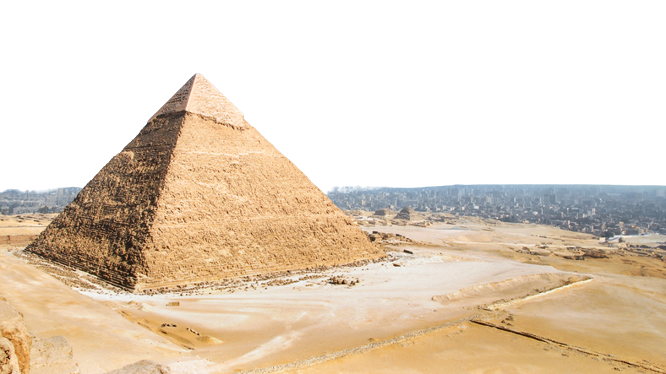
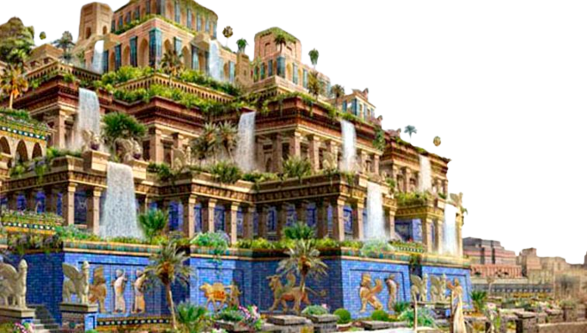
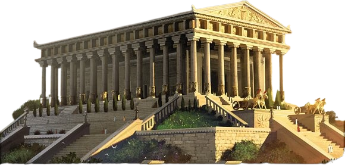
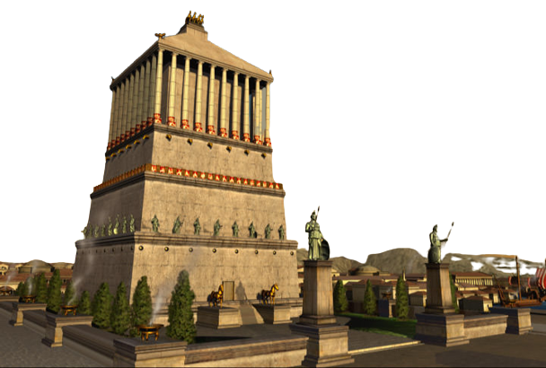
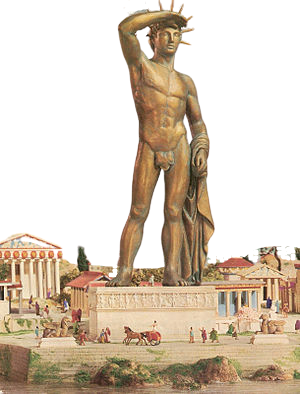
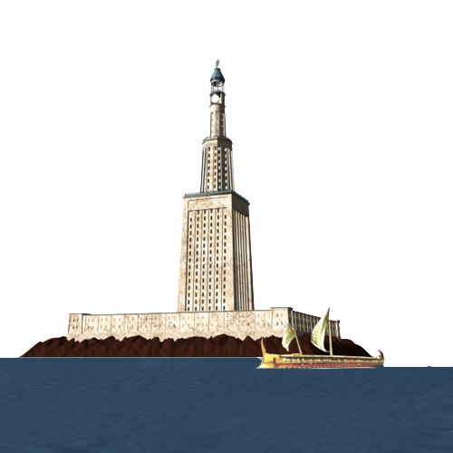

La Gran Pirámide de Guiza es la más antigua de las siete maravillas del mundo y la única que aún perdura, además de ser la mayor de las pirámides de Egipto. Fue ordenada a construir por el faraón de la cuarta dinastía del Antiguo Egipto Keops. El arquitecto de dicha obra es Hemiunu. La fecha estimada de terminación de la construcción de la Gran Pirámide es alrededor de 2570 a. C., siendo la primera y mayor de las tres grandes pirámides de la Necrópolis de Guiza, situada en las afueras de El Cairo, en Egipto.
Los Jardines Colgantes de Babilonia son considerados una de las Siete Maravillas del Mundo Antiguo, y fueron construidos en el siglo VI a. C. durante el reinado de Nabucodonosor II en la ciudad de Babilonia (la Babel de los textos bíblicos), a orillas del río Éufrates (Mesopotamia). Las aguas para regar las plantas eran traídas desde las orillas del río Éufrates,que se encontraba en las faldas de la montaña. En los jardines se plantaban palmeras y árboles frutales, como el dátil y los cocos. Se cree que sus diseños y construcciones se iniciaron en 605 a. C., por orden del rey Nabucodonosor II de la dinastía caldea del Imperio neobabilónico, como muestra de amor hacia su esposa Amytis, hija de rey Ciáxares del Imperio medio (Media o "Umman Manda"), para recordarle a las montañas de su tierra.
El Templo de Artemisa fue un templo ubicado en la ciudad de Éfeso, Turquía, dedicado a la diosa Artemisa, denominada Diana por los romanos. Su construcción fue comenzada por el rey Creso de Lidia y duró unos 120 años. De grandes dimensiones y hermosa arquitectura, es considerada una de las Siete Maravillas del Mundo Antiguo, tal como lo describió Antípatro de Sidón, quien elaboró la famosa lista: "He posado mis ojos sobre la muralla de la dulce Babilonia, que es una calzada para carruajes, y la estatua de Zeus de los alfeos, y los jardines colgantes, y el Coloso del Sol, y la enorme obra de las altas Pirámides, y la vasta tumba de Mausolo; pero cuando vi la casa de Artemisa, allí encaramada en las nubes, esos otros mármoles perdieron su brillo, y dije: aparte de desde el Olimpo, el Sol nunca pareció jamás tan grande" Antípatro de Sidón Antología griega (IX.58) El templo estaba compuesto por numerosos edificios, que los arqueólogos denominaron con letras sucesivas. El edificio más antiguo e importante era el D. El Templo de Artemisa fue destruido por un incendio, provocado por un hombre llamado Eróstrato, en el año 356 a. C.
La Estatua de Zeus en Olimpia fue una escultura crisoelefantina elaborada por el famoso escultor clásico Fidias, en Olimpia, (Grecia) y forma parte de las Siete Maravillas del Mundo Antiguo. Fue destruida y se perdió en el siglo V d.C., y sólo se sabe de ella gracias a descripciones de historiadores antiguos y representaciones en monedas. Tradicionalmente se ha creído que la estatua fue realizada hacia el final de la vida de Fidias, en torno al año 430 a. C., pero algunos historiadores opinan, en cambio, que pudo haber sido hecha antes que la estatua de Atenea Partenos (realizada en 438 a. C.), apoyándose, entre otros argumentos, en que las diferentes condiciones de iluminación de ambas esculturas en sus respectivos emplazamientos sugieren que Fidias trató de mejorar en la Atenea Pártenos la adaptación a su edificio con respecto al Zeus de Olimpia

El Mausoleo de Halicarnaso o el Sepulcro de Mausoleion fue un monumento funerario suntuoso construido entre el año 353 a. C. y el 350 a. C.1 en Halicarnaso (actualmente Bodrum, Turquía) para Mausolo, un sátrapa del Imperio persa. La estructura fue encargada por su esposa y hermana, Artemisia II de Caria, a los arquitectos griegos Sátiro de Paros y Piteo. El mausoleo medía aproximadamente 45 metros de altura, y cada una de las cuatro plantas estaba adornada con relieves escultóricos creados por cada uno de los escultores griegos Leocares, Briaxis, Escopas de Paros y Timoteo.4 La estructura del mausoleo fue considerada un gran triunfo estético, tanto que Antípatro de Sidón lo consideró como una de las Siete Maravillas del Mundo. Esta edificación, asimismo, indica una nueva tendencia hacia lo monumental en el arte del período pos-clásico o helenístico. La palabra mausoleo actualmente se utiliza para referirse a un monumento funerario y sepulcro suntuoso.
El coloso de Rodas era una gran estatua del dios griego Helios, realizada por el escultor Cares de Lindos en la isla de Rodas (Grecia) en 292 a. C. y destruida por un terremoto en 226 a. C. Es considerada una de las Siete maravillas del mundo antiguo. Todo lo que se conoce sobre esta estatua se debe a las noticias que dejaron los escritores antiguos Plinio el Viejo, Polibio2 y Estrabón, y a las crónicas bizantinas de Constantino VII Porfirogéneta, Miguel el Sirio y Filón. La estatua (hecha con placas de bronce sobre un armazón de hierro) representaba al dios griego del sol, Helios. Según Plinio el Viejo, medía unos 32 m: Pero de todos el más admirado fue el Coloso del Sol, en Rodas, hecho por Cares de Lindos, alumno del Lisipo antes mencionado. Esta estatua medía 70 codos de altura.3 Después de 66 años un terremoto la postró, pero incluso yacente es un milagro. Pocos el pulgar pueden abarcar con los brazos, sus dedos eran más grandes que la mayoría de las estatuas que tenían marfil. El vacío de sus miembros rotos se asemeja a grandes cavernas. En el interior se ven magnas rocas, con cuyo peso habían estabilizado su constitución. Doce años tardaron en terminarla y costó 300 talentos, que se consiguieron de las máquinas de guerra abandonadas por el rey Demetrio en el asedio de Rodas. Plinio el Viejo, Historia natural (34.18.3)4 La base, de mármol blanco, medía 40 codos (15 metros). Habría pesado unas 70 toneladas. En comparación, la Estatua de la Libertad ―ubicada en Nueva York― mide 33 metros y tiene una base de 48 metros,5 aunque fue construida más de 2000 años más tarde.
El Faro de Alejandría fue una torre construida en el siglo III a. C. (entre los años 285 y 247 a. C.) en la isla de Faro en Alejandría, Egipto, para servir como punto de referencia del puerto y como faro. Con una altura estimada entre 115 y 150 metros. Fue una de las estructuras hechas por el hombre más altas durante muchos siglos, y fue identificada como una de las Siete maravillas del mundo por Antípatro de Sidón. Sería derribado por los efectos de un terremoto a principios del siglo XIV. Lo construyó el arquitecto Sóstrato de Cnido por orden de Ptolomeo I en la isla de Faro (Pharos), frente a Alejandría. Consistía en una gran torre sobre la que una hoguera nocturna marcaba la posición de la ciudad a los navegantes, dado que la costa en la zona del delta del Nilo es muy llana y se carecía, por tanto, de cualquier referencia para la navegación marítima.
